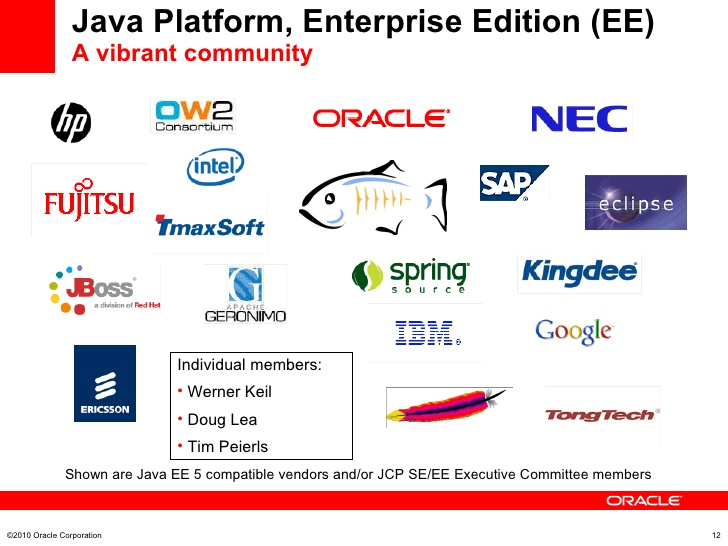
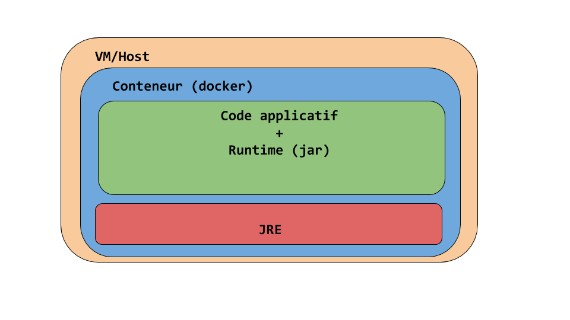
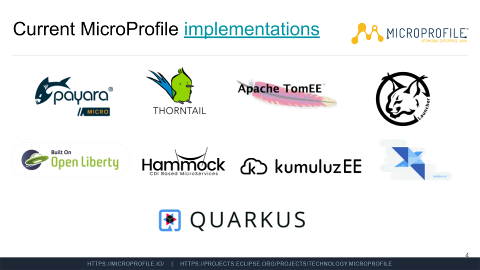

Pascal Lombard / @plombard_00
Pascal Lombard
Développeur de solutions Cloud au Crédit Mutuel Arkéa
Java, Back, Industrialisation, Cloud
De J2EE à JavaEE à JakartaEE à...
C'est quoi Java EE ?
Tout bêtement une extension de l'API Java SE (Standard Edition)
Un écosystème de vendeurs
Chronologie d'un désastre
- Java 2 Platform, Enterprise Edition 1.2 (1999)
- J2EE 1.3 (2001)
- J2EE 1.4 (2003)
- Java EE 5 (2006)
- Java EE 6 (2009)
- Java EE 7 (2013)
- Java EE 8 (2017)
... Rachat par Oracle 😐
... Désintérêt manifeste 😪
"Fine. I'll do it myself !"
"Fine. I'll do it myself !"
- JavaOne 2016
- Eclipse récupère le projet EE4J (Octobre 2017)
- Sources des TCKs sous licence libre (Septembre 2018)
- Jakarta EE 8 (Septembre 2019)
- Jakarta EE 9 (Big Bang Juin 2020)
Pourquoi le serveur d'applications est toujours pertinent aujourd'hui ?
- Délègue beaucoup de la maintenance aux ops/devops
- Fournit des abstractions connues (Requêtes, Messages, War...)
- Nouveau look pour une nouvelle vie
- Docker
L'insoutenable légèreté de n'avoir pas à se soucier du runtime
<dependency>
<groupId>jakarta.platform<groupId>
<artifactId>jakarta.jakartaee-api<artifactId>
<version>8.0.0<version>
<type>pom<type>
<scope>provided<scope>
<dependency>
Intérêt du fatjar
- Le serveur d'appli validé par la prod est EE 6
- Je développe avec les apis EE 8 parce que l'agilité
- J'attends que la prod valide un serveur EE 8
- Le temps que ça arrive ma boîte a coulé...
- ... à moins que je n'emballe le tout dans un fatjar !
Intérêt du thin war
Intérêt du thin war

Intérêt du thin war

Intérêt du thin war

Microprofile, un JavaEE "léger" ?
Microprofile - Objectifs
Sous-ensemble minimal de JakartaEE
+ Des fonctionnalités pour gérer la complexité (μS)
... Mais une cadence plus élevée (3/an).
Une gouvernance similaire mais plus souple
Implémentations
Démo
JakartaEE est le reflet parfait de l'évolution des 2010s
- Commercial -> Open Source
- Vente de licences -> Support et Services Cloud
- Corporations -> Communautés
- Évolutions forcées par la technologie